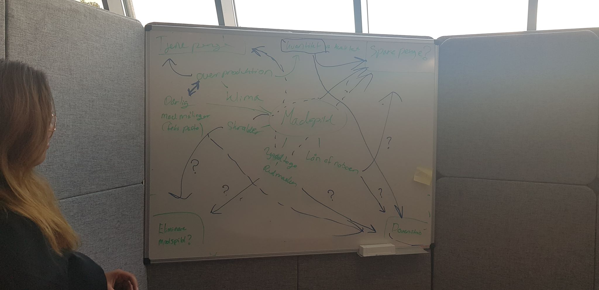
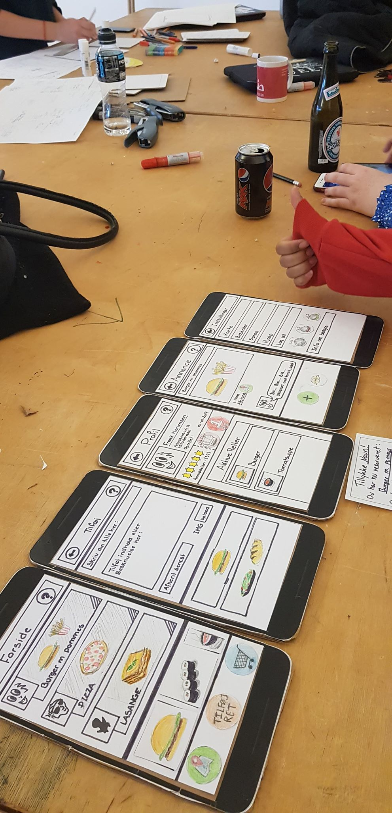

I vores forløb om Design Thinking - skulle vi indgå i grupper og sammen deltage i et projekt, som skulle ende med et produkt i form af en app. Med dette projekt skulle vi benytte os af Design Thinking metoden, og dermed fordybe os i det vi havde lært tidligere i forløbet.
Ønsker du at læse mere om Design Thinking og hvad det indeholder, så klik HER
Vi fik som emne "Udlån og Reservation". Så i første fase brainstormede vi efter eventuelle problemstillinger - dette foregik med en masse research og traditionelle tavle mindmaps

I anden fase samlede vi vores data og blev enige om én konkret problemstilling. Vi havde nu indstillet os på emnet Madspild, da vi så et klart problem med det i vores samfund; og ville finde ud af hvordan vi kunne formindske det. Dog uden at komme med konkrete ideer, brainstormede vi samlet forsat på emnet og rettede vores fokus på købere, sælgere og madproduktions virksomhedder.
Det var under denne fase, at vi tog ud til samtlige fødevareforretninger i Skive, for at få deres vinkling og syn på madspild - samt hvad de aktivt gjorde for at formindske det. Vi benyttede os her af den kvalitative metode, da vi interviewede de ansvarlige for forretningerne. Ud over det, interviewede vi skraldere og lavede kvantitative spørgeskemaer her rettet mod forbrugeren. Med spørgeskemaerne gik vi aktivt ned i byen og spurgte utallige folk på gaden om deres holdning til madspild, samt fik lovende data for hvad de gjorde med deres madrester.
I tredje fase gik vi i gang med at idé udvikle. Det tog os ikke lang tid at komme frem til, hvad vi ville - da vi løbende havde gemt på nogle ideer, vi havde fået fra de tidligere faser. Vi ville lave et app, som ville forhindre det almindelige menneske i at smide brugbart mad ud.
I fjerde fase skulle der klippes og klistres. Vi gik amok med de mange design ideer, vi havde diskuteret - og blev enige om en prototype.
I femte fase brugertestede vi. Vi fik mange gode inputs - men også god konstruktiv kritik, både på designet og emnet i sin helhed. Det var ganske få ting, vi valgte at lave om på, forinden vi skulle fremføre vores pitch af produktet i den sidste fase.